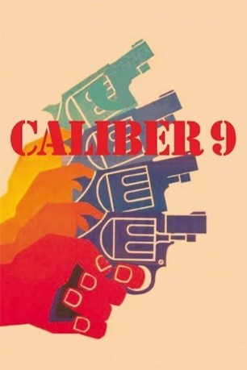

#5421 Milano Kaliber 9
Alternativ: Caliber 9 (Englischer Titel)
 
 IMDB-Wertung: 7.7 / 10
IMDB-Wertung: 7.7 / 10  Metascore: 0
Metascore: 0 
Nach einem misslungenen Coup wandert der Ganove Ugo Piazza für einige Jahre in den Knast. Kaum wieder auf freiem Fuß, bekommt er auch schon wieder Stress mit seinem ehemaligen "Arbeitgeber". Dessen Scherge Rocco bewacht Ugo auf Schritt und Tritt, denn der Boss, genannt "Der Amerikaner", glaubt, dass Ugo ihn damals um eine ordentliche Summe Geld betrogen hätte. Ugo bittet seinen Freund Chino um Hilfe, doch weder die Gangster noch die Polizei glauben seinen Unschuldsbeteuerungen, so dass die Situation schließlich eskaliert..
Jahr: 1972
Dauer: 101 Minuten
FSK: 16
Land: Italien Studio: Constantin FilmTonspuren:
Untertitel: Deutsch,
Auflösung: 1080p (1920x1040) Größe: 5591 MB
Genre: Action, Thriller, Krimi
Regisseur: Fernando Di Leo
Drehbuch: Derek Cianfrance
Soundtrack:
Darsteller:
- Barbara Bouchet als Nelly Borden
 Mario Adorf als Rocco
Mario Adorf als Rocco Luigi Pistilli als Mercuri
Luigi Pistilli als Mercuri Philippe Leroy als Chino
Philippe Leroy als Chino Lionel Stander als Americano
Lionel Stander als Americano Cyril Cusack als Hotel Front Desk Clerk , uncredited
Cyril Cusack als Hotel Front Desk Clerk , uncredited Michael Forest als Commissioner , uncredited
Michael Forest als Commissioner , uncredited Ted Rusoff als Chino / Cop with Glasses / Luca , uncredited
Ted Rusoff als Chino / Cop with Glasses / Luca , uncredited- Gastone Moschin als Ugo Piazza
 Frank Wolff als Commissioner
Frank Wolff als Commissioner- Ivo Garrani als Don Vincenzo
- Mario Novelli als Pasquale Talarico
- Giuseppe Castellano als Nicola
- Salvatore Arico als Luca
- Fernando Cerulli als Clerk at Hotel Reception
- Giulio Baraghini als Brigadier
- Alessandro Tedeschi als Old Courier with Glasses
- Franco Beltramme als Hood
- Rossella Bergamonti als Woman
- Bruno Bertocci als Courier
- Empedocle Buzzanca als Courier
- Fortunato Cecilia als Affatato
- Ernesto Colli als Alfredo Bertolon
- Alberto Fogliani als Hood
- Ettore Geri als Barman
- Imelde Marani als Courier
- Sergio Serafini als Cop
- Giorgio Trestini als Franceschino
- Mira Vidotto als Woman
- Artemio Antonini als Hood , uncredited
 Salvatore Billa als Hood , uncredited
Salvatore Billa als Hood , uncredited- Angelo Boscariol als Cop , uncredited
- Marina Brengola als Woman , uncredited
- Cicely Browne als Prostitute , uncredited
- Sisto Brunetti als Cop , uncredited
 Omero Capanna als American's Hood , uncredited
Omero Capanna als American's Hood , uncredited- Lewis E. Ciannelli als Nicola , uncredited
- Fernando Di Leo als Man at Phone Booth , uncredited
- Cesare Di Vito als Cop , uncredited
- Gilberto Galimberti als Hood , uncredited
- Luigi Antonio Guerra als Hitman , uncredited
- Giuseppe Leone als Hood , uncredited
- Domenico Maggio als Hood , uncredited
- Edward Mannix als Rocco Musco , uncredited
- Marco Mariani als Cop , uncredited
- Gianni Milito als Hood , uncredited
- Gastone Pescucci als Cop , uncredited
- Robert Sommer als Brigadier , uncredited
- Robert Spafford als Ugo Piazza , uncredited
- Dan Sturkie als Don Vincenzo , uncredited
Datei: X:\1972\Milano Kaliber 9 (1972, FSK16, 1920x1040).mkv seit 30.01.2017
Festplatte: HD 1971-1979
 Es gibt insgesamt 26 Filme in der Gruppe '1972'
Es gibt insgesamt 26 Filme in der Gruppe '1972'